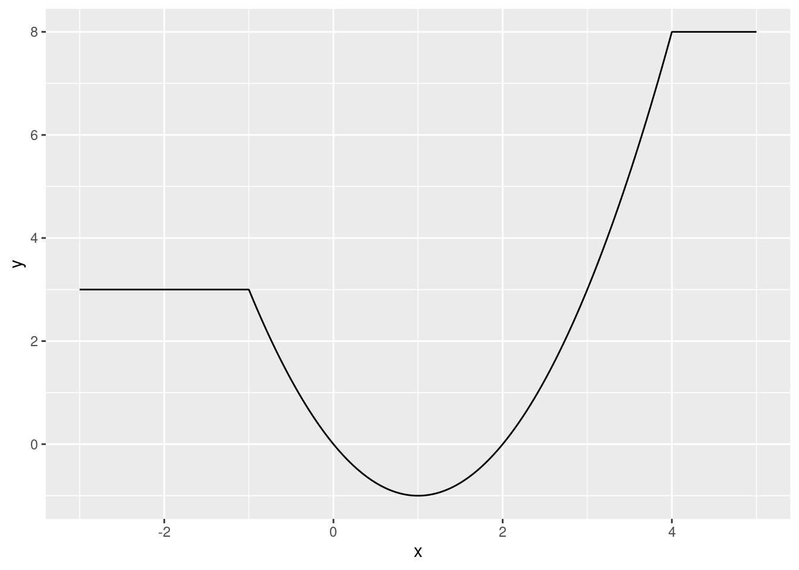

exp(2)[1] 7.389056Calculate \(e^2\) using R:
exp(2)[1] 7.389056Calculate \(\sqrt[4]{256}\) using R.
256^(1/4)[1] 4If we create the following vector in R, what class will it be?
c(FALSE, TRUE, "c", "d")Note: You do not need to supply your code for this question.
x <- c(1, 2, "c", "d")
x[1] "1" "2" "c" "d"class(x)[1] "character"# All elements of a vector in R must have the same class. Here all elements
# are coerced to be character.Write an R command to generate a numeric vector containing the following sequence:
\[ (0, 2, 0, 4, 0, 6, 0, 8, \dots, 0, 98, 0, 100) \]
1:100 * rep(c(0, 1), times = 50) [1] 0 2 0 4 0 6 0 8 0 10 0 12 0 14 0 16 0 18
[19] 0 20 0 22 0 24 0 26 0 28 0 30 0 32 0 34 0 36
[37] 0 38 0 40 0 42 0 44 0 46 0 48 0 50 0 52 0 54
[55] 0 56 0 58 0 60 0 62 0 64 0 66 0 68 0 70 0 72
[73] 0 74 0 76 0 78 0 80 0 82 0 84 0 86 0 88 0 90
[91] 0 92 0 94 0 96 0 98 0 100Consider the two vectors below: \[
\begin{split}
a &= (1, 4, 8, 2, 5, 6) \\
b &= (2, 4, 6, 8, 10)
\end{split}
\] Write an R command that returns for each element in \(a\), TRUE if that element is contained anywhere \(b\), and FALSE otherwise. The output should be a logical vector with 6 elements (the number of elements in \(a\)). For example, the first element should be FALSE because 1 is not contained anywhere in \(b\), whereas the second element should be TRUE because 4 is contained somewhere in \(b\).
a <- c(1, 4, 8, 2, 5, 6)
b <- c(2, 4, 6, 8, 10)
a %in% b[1] FALSE TRUE TRUE TRUE FALSE TRUEDownload the dataset ceosal.csv. The dataset contains information on chief executive officers (CEOs) at different companies. The variable descriptions are:
salary: CEO compensation in 1990 (in dollars).age: CEO agecollege: \(=1\) if the CEO attended college and \(=0\) otherwise.grad: \(=1\) if the CEO attended post-graduate education and \(=0\) otherwise.comten: Years the CEO worked with the company.ceoten: Years as CEO with the company.profits: Profits of the company in 1990 (in dollars).How many variables are in the dataset?
# First we need to change directory to the folder containing the ceosal.csv
# file. Ideally you would do this using an R project.
df <- read.csv("ceosal.csv")
ncol(df)[1] 7What is the maximum of the variable comten?
max(df$comten)[1] 58What is the mean salary of the CEOs aged between 50-59?
mean(df$salary[df$age %in% 50:59])[1] 796246.9How many CEOs in the dataset didn’t work for their company before becoming the CEO?
# If they joined the company as a CEO, then comten is equal to ceoten:
sum(df$ceoten == df$comten)[1] 38How old is the best-paid CEO in the dataset?
df$age[df$salary == max(df$salary)][1] 64Download the dataset euro-dollar-2022.csv. The dataset contains the closing Euro-Dollar exchange rate (variable “Price”) each day throughout 2022, together with the opening, highest and lowest exchange rate. Furthermore, it includes the volume traded and the percentage daily change in the closing price.
In this question you will need clean this dataset to answer the questions that follow.
You should do the following cleaning tasks:
Date variable to a date.Date ascending (the earliest date in the data should be first, the most recent date last).Price, Open, High and Low to numeric.Vol to numeric. For example, "33.87K" should be 33870. Hint: First use the gsub() function to remove the K. Then convert the variable to numeric format. Finally multiply it by 1,000.Change to numeric. Tip: Use gsub("\\%", "", x) to remove a percentage symbol from x.If you did all the steps correctly, you should have 260 observations. The average of the high variable should be 0.9561. The average of the vol variable should be 79,920. If only some of these match your cleaned dataset, you will still be able to answer some of the questions correctly.
# First perform all the cleaning tasks:
df <- read.csv("euro-dollar-2022.csv")
# Format the date:
head(df$Date)[1] "12/31/22" "12/30/22" "12/29/22" "12/28/22" "12/27/22" "12/26/22"# Format is MM/DD/YY (year without century):
df$Date <- as.Date(df$Date, format = "%m/%d/%y")
# Order by date:
df <- df[order(df$Date), ]
# Drop observations with missing data:
df <- na.omit(df)
# Convert prices data to numeric:
df$Price <- as.numeric(df$Price)
df$Open <- as.numeric(df$Open)
df$High <- as.numeric(df$High)
df$Low <- as.numeric(df$Low)
# Convert volume to numeric:
df$Vol <- 1000 * as.numeric(gsub("K", "", df$Vol))
# Convert Change numeric:
df$Change <- as.numeric(gsub("\\%", "", df$Change))
# Convert variable names to lower case:
names(df) <- tolower(names(df))Create a variable called open_vs_close which is the open variable minus the price variable. What is the maximum of this variable?
df$open_vs_close <- df$open - df$price
max(df$open_vs_close)[1] 0.022Use the function wday() from the lubridate package to get the numeric day of the week from the date variable as follows: wday(df$date, week_start = 1). The function returns numbers for each day of the week as follows:
On what day of the week was the lowest volume traded in the dataset?
library(lubridate)
df$weekday <- wday(df$date, week_start = 1)
df$weekday[df$vol == min(df$vol)][1] 1What was the largest positive daily price change in the data?
Write the percentage change without the % symbol.
max(df$change)[1] 1.51What proportion of days did the exchange rate exceed 1.00?
mean(df$price > 1)[1] 0.1769231The following 3 questions will involve working with the following mathematical function defined over all real numbers \(x\):
\[ f(x) = \begin{cases} 3 &\text{ if } x < -1 \\ 8 &\text{ if } x > 4 \\ x^2-2x &\text{ otherwise} \\ \end{cases} \]
Plot the function between the \(x\) values \(-3\) and \(+5\). Choose the answer below which best describes the shape of this function:
Note: you do not need to save your answer in your R script for this question.
f <- function(x) {
y <- ifelse(x < -1, 3, ifelse(x > 4, 8, x^2 - 2*x))
return(y)
}
library(ggplot2)
x <- seq(-3, 5, length.out = 2000)
y <- f(x)
df <- data.frame(x, y)
ggplot(df, aes(x, y)) + geom_line()
# We can see that it has some flat parts, and a U-shape in other parts.Use R to find the value of \(x\) that minimizes this function. Specify the interval to search over to be \([-1, 4]\).
f_min <- optimize(f, c(-1, 4))
f_min$minimum[1] 1What value does the function take at the minimum?
f_min$objective[1] -1# or alternatively:
f(f_min$minimum)[1] -1Download the two datasets:
country, year and gdp_pc_growth. The variable gdp_pc_growth is the growth rate of the country’s per capita gross domestic product (GDP) in that year.country, year and lending_rate. The variable lending_rate is the lending interest rate in that country in that year.Using the dataset gdp-per-capita-growths.csv, calculate the minimum per capita GDP growth rate each country experienced over the years recorded in the dataset.
Which country had the largest minimum growth rate out of all countries?
df <- read.csv("gdp-per-capita-growths.csv")
tmp <- aggregate(gdp_pc_growth ~ country, data = df, FUN = min)
tmp <- tmp[order(tmp$gdp_pc_growth, decreasing = TRUE), ]
tmp$country[1][1] "China"Merge the datasets gdp-per-capita-growths.csv and lending-rates.csv together by the variables "country" and "year", keeping all observations in the gdp-per-capita-growths.csv dataset, but only merging observations from the lending-rates.csv dataset with a match.
Your merged dataset should have 4,087 observations and 4 variables.
How many observations of the variable lending_rate are missing in the merged dataset?
# Read in both datasets:
df1 <- read.csv("gdp-per-capita-growths.csv")
df2 <- read.csv("lending-rates.csv")
# Merge by country and year:
df <- merge(df1, df2, by = c("country", "year"), all.x = TRUE)
# Check that dimensions match the question description:
dim(df)[1] 4087 4# Count the number of missing observations in the lending_rate variable:
sum(is.na(df$lending_rate))[1] 1515Perform the following steps with the lending-rates.csv dataset:
Your resulting dataset should have 108 rows and 3 variables. The first three rows should look like:
country 2000 2010
Albania 22.10250 12.82233
Algeria 10.00000 8.00000
Angola 103.16017 22.54357What is the mean change in the lending rate from 2000 to 2010 in the dataset? That is, find the mean of the lending rate in 2010 minus the lending rate in 2000.
library(reshape2)
df <- read.csv("lending-rates.csv")
df <- df[df$year %in% c(2000, 2010), ]
df <- dcast(df, country ~ year)Using lending_rate as value column: use value.var to override.df <- na.omit(df)
mean(df[, 3] - df[, 2])[1] -7.554905